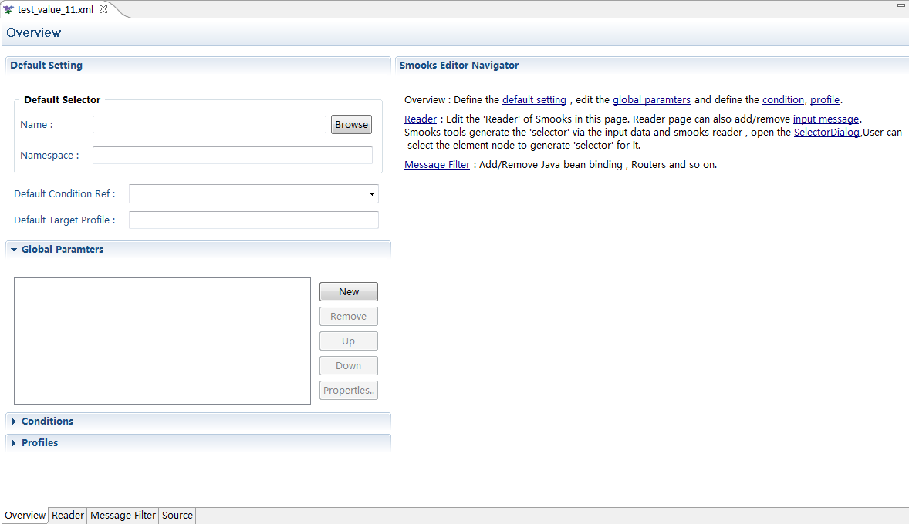
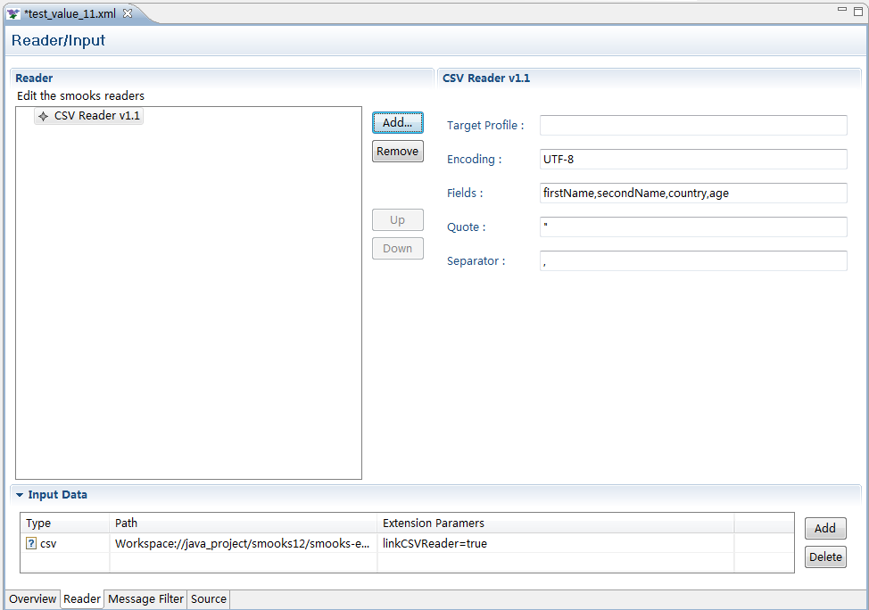
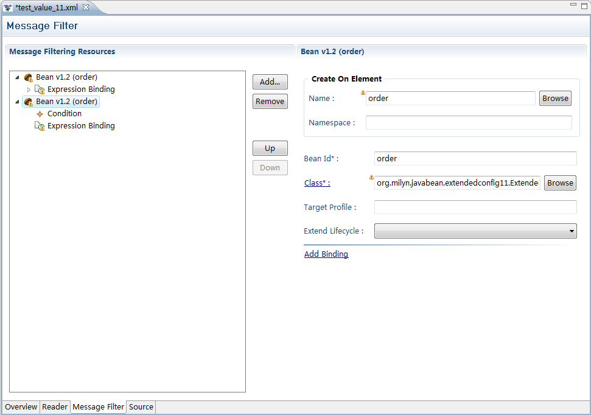
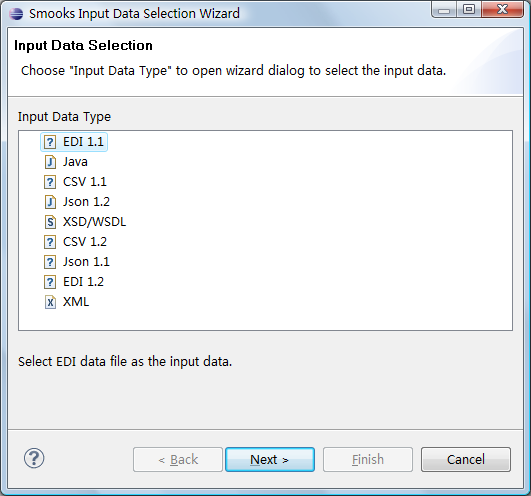
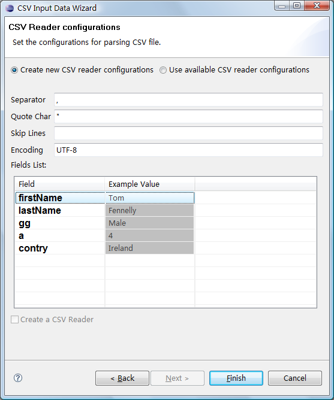
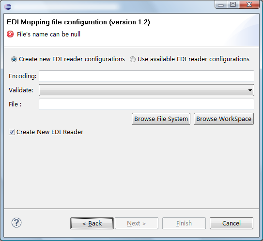
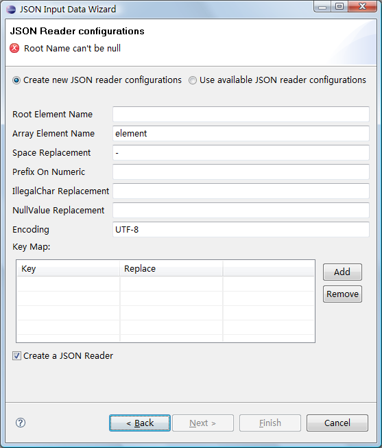

| Multiple Page Editor |
Overview page. Configurate the high level informations of
Smooks configuration file.

Reader Page. Add/Remove the Reader model in this page.

Message Filter Page. This page inherits many functions from the
Design page , it can add/remove the message filter resources.

|
| Support
CSV,JSON,EDI input type data |
Support CSV , JSON , EDI input type data

CSV input Reader configuration wizard page.

EDI input Reader configuration wizard page.

JSON input Reader configuration wizard page.

|